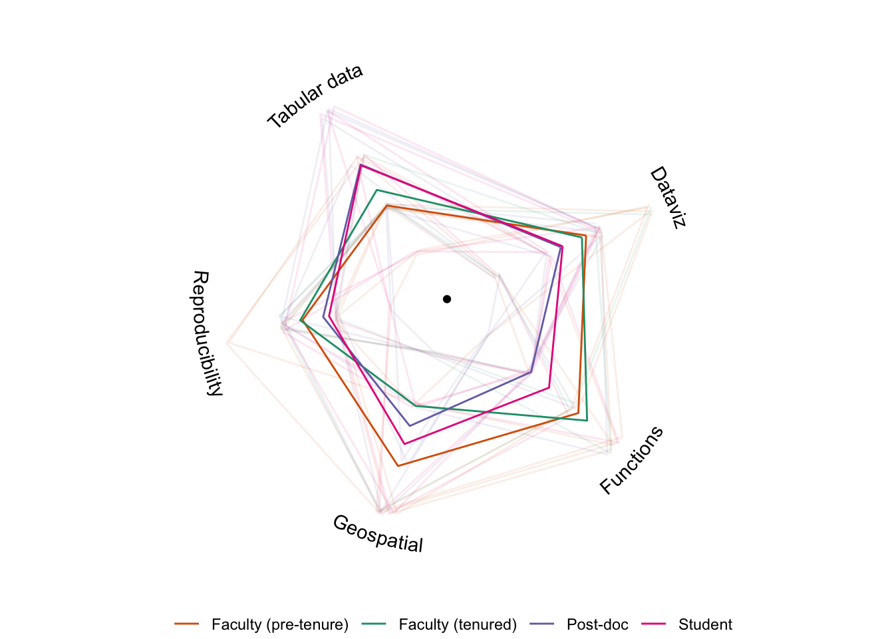

prior_knowledge_long <- prior_knowledge %>%
pivot_longer(cols = starts_with("prior"),
names_to = "skill",
values_to = "rating") %>%
mutate(skill = factor(substr(skill, 6, 100))) %>%
arrange(id, skill) %>%
group_by(id) %>%
# We'll do a wrap around
slice(c(1:n(), 1)) %>%
ungroup()
prior_knowledge_summary <- prior_knowledge_long %>%
group_by(career_stage, skill) %>%
summarize(rating = mean(rating),
.groups = "drop_last") %>%
slice(c(1:n(), 1)) %>%
ungroup()
skills <- distinct(prior_knowledge_long, skill)
ggplot(prior_knowledge_long, aes(skill, rating, color = career_stage)) +
geom_path(aes(group = id),
alpha = 0.1,
position = position_jitter(0.05, 0.05)) +
geom_path(aes(color = career_stage, group = career_stage),
prior_knowledge_summary) +
annotate("point", 0, 0) +
geomtextpath::geom_textpath(aes(skill, label = skill),
skills,
y = 4.3,
inherit.aes = FALSE,
vjust = 1) +
scale_color_manual(values = c(Student = "#e7298a",
`Post-doc` = "#7570b3",
`Faculty (pre-tenure)` = "#d95f02",
`Faculty (tenured)` = "#1b9e77")) +
scale_y_continuous(limits = c(0, 4.3)) +
ggiraphExtra:::coord_radar() +
theme_void() +
theme(legend.position = "bottom",
legend.title = element_blank())